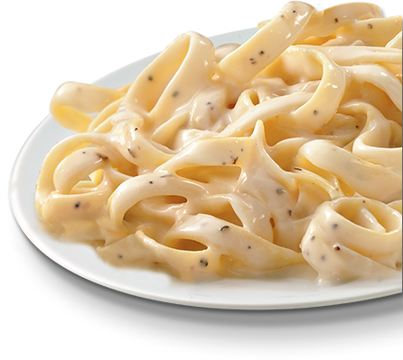

Fettuccine Alfredo

Description
This is a recipe for Fettucine Alfredo given to me by my father. This recipe uses cream cheese, half and half, heavy cream and butter which makes it delicious! We like to serve this with sauteed vegetables and garlic bread.
Ingredients
- 1 lb. dry fettuccine
- 1 1/2 quarts of Half and Half
- 1 pint heavy cream
- 8 ounces Cream Cheese
- 1/2 lb. Butter
- 12 cloves of Garlic (chopped)
- 1/2 cup Parmesan Cheese
- 1/2 cup Pecorino Romano Cheese
- 2 Eggs
- Italian Seasoning
Steps
- Boil Fettuccine ina large pot until cooked
- Heat butter in a large saute pan
- Saute Garlic (do not brown)
- Add 1/2 teaspoon Italian Seasoning
- Add Half and Half
- Add Heavy Cream
- Add Cream Cheese (break it up in the pan)
- Heat until cream cheese is melted and incorporated fully
- Add Parmesan and Pecorino cheese
- Heat and mix till all is melted and incorporated
- Salt/pepper to taste
- Turn off heat and mix in the eggs
- Add boiled Fettuccine, mix and serve